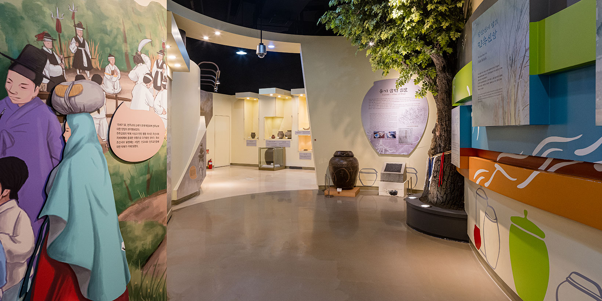
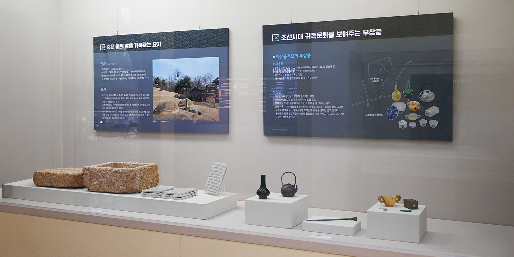
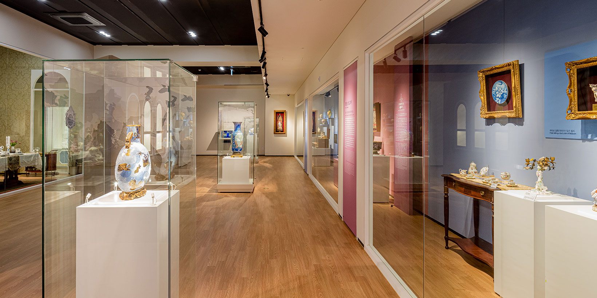
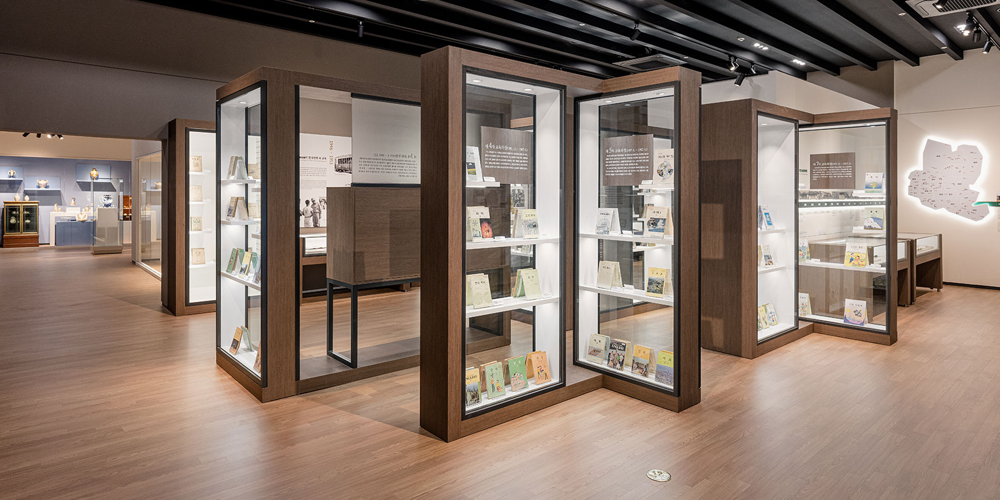
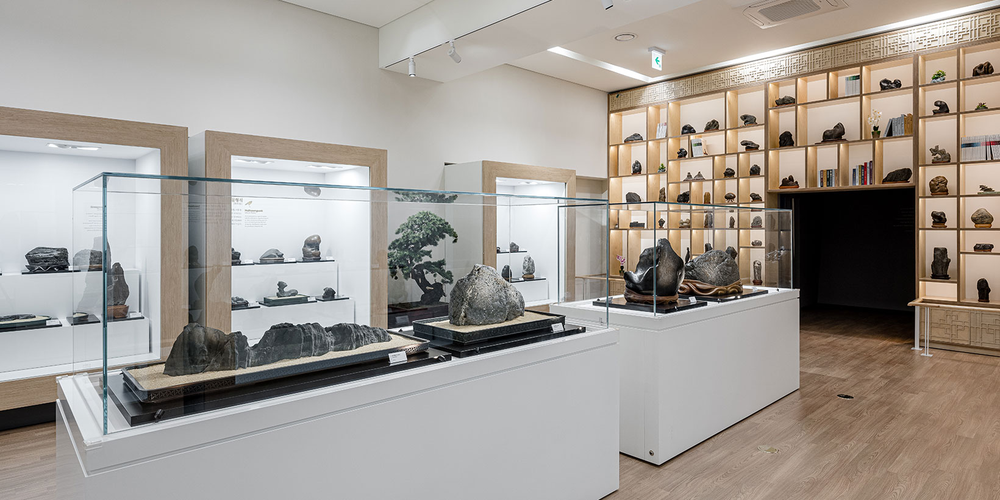

常设展览
五个主题、六个展室，呈现不同年代的器物、生活与文化。

陶器1展室 · 陶器2展室옹기
传统陶器
从汝月洞店末窑址出发，了解陶器的制作，以及储水、储粮和发酵器物与日常生活的关系。
展览内容
- 店末窑址与时代变化
- 陶土、纹样与釉料
- 成型与烧制
- 地区器形与发酵文化
代表藏品

富川地方历史展室
欧洲瓷器展室
教育展室
观赏石展室五个主题、六个展室，呈现不同年代的器物、生活与文化。

陶器1展室 · 陶器2展室옹기
从汝月洞店末窑址出发，了解陶器的制作，以及储水、储粮和发酵器物与日常生活的关系。

富川地方历史展室
欧洲瓷器展室
教育展室
观赏石展室